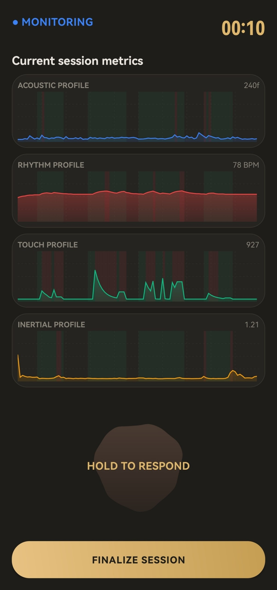
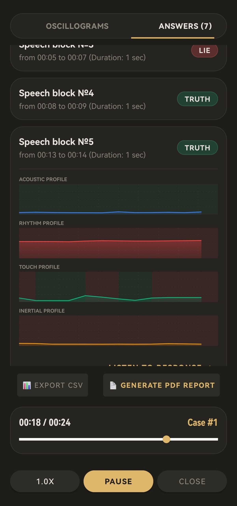

Veras: Polygraph & Lie Detector



📊 4-Channel Verification
Real-time telemetry tracking across four independent channels: acoustic pitch waves, display touch pressure dynamics, device tremor logs via high-pass filter accelerometer, and a synchronized virtual rhythm track.
🧩 Automated Segmentation
Organizes data logs into specific, reviewable response blocks based on the "Touch-and-Hold" bio-sphere scanner mechanics with a built-in 800ms tail-hold protection engine to capture phrase endings perfectly.
👁️ Forensic Analysis
Review completed sessions with mini-graph overlays synced to variable-speed audio playback (0.5x to 2.0x) for strict post-factum verification without internet dependence.
🔒 Privacy & Security
Absolute offline operations with zero cloud dependencies. Features local SQLite storage, cryptographic SHA-256 signature non-repudiation sealing, and a secure one-click data shredder.